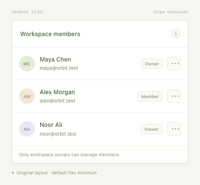
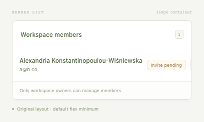

CONFIGURABLE SCENARIO · 2026-11-03T00:42:03.996Z
Member list · reference defect
The primary member action must remain contained and receive pointer events.
Confirmed action failure
14 valid cases checked · 9 passed · 5 failed · 0 inconclusive. This evaluates one declared action rule, not overall component correctness.
Baseline: passed — The action is inside its row and receives pointer events at its center.



Confirmed in 3/3 fresh contexts
Exported replay: same failure verified by executing the saved Playwright test. No repair was attempted.
Reduction: 457 → 170 bytes, 11 probes. Best found under configured candidates and budget.
{
"containerWidth": 360,
"members": [
{
"id": "member-primary",
"name": "Alexandria Konstantinopoulou-Wiśniewska",
"email": "a@b.co",
"role": null,
"status": "invited",
"avatar": null
}
]
}Reduction trail
[
{
"label": "Remove unrelated member",
"accepted": true,
"status": "failed",
"reason": "The action extends 86px outside its row.",
"bytes": 337
},
{
"label": "Remove unrelated member",
"accepted": true,
"status": "failed",
"reason": "The action extends 86px outside its row.",
"bytes": 220
},
{
"label": "Simplify avatar",
"accepted": true,
"status": "failed",
"reason": "The action extends 44px outside its row.",
"bytes": 218
},
{
"label": "Simplify role",
"accepted": true,
"status": "failed",
"reason": "The action extends 44px outside its row.",
"bytes": 215
},
{
"label": "Simplify status",
"accepted": false,
"status": "passed",
"reason": "The action is inside its row and receives pointer events at its center.",
"bytes": 214
},
{
"label": "Simplify email",
"accepted": true,
"status": "failed",
"reason": "The action extends 26px outside its row.",
"bytes": 170
},
{
"label": "Simplify status",
"accepted": false,
"status": "passed",
"reason": "The action is inside its row and receives pointer events at its center.",
"bytes": 169
},
{
"label": "Shorter name: Jo",
"accepted": false,
"status": "passed",
"reason": "The action is inside its row and receives pointer events at its center.",
"bytes": 132
},
{
"label": "Shorter name: Maya Chen",
"accepted": false,
"status": "passed",
"reason": "The action is inside its row and receives pointer events at its center.",
"bytes": 139
},
{
"label": "Shorter name: Alexandria",
"accepted": false,
"status": "passed",
"reason": "The action is inside its row and receives pointer events at its center.",
"bytes": 140
},
{
"label": "Shorter name: Konstantinopoulou-Wiśniewska",
"accepted": false,
"status": "passed",
"reason": "The action is inside its row and receives pointer events at its center.",
"bytes": 159
}
]All supplied cases
| Case | Result | Evidence |
|---|---|---|
| Compound name + pending invitation curated | failed | The action extends 86px outside its row. |
| Long email address curated | failed | The action extends 74px outside its row. |
| One-letter name curated | passed | The action is inside its row and receives pointer events at its center. |
| Missing avatar and role curated | passed | The action is inside its row and receives pointer events at its center. |
| Vietnamese diacritics curated | passed | The action is inside its row and receives pointer events at its center. |
| Emoji grapheme in a name curated | passed | The action is inside its row and receives pointer events at its center. |
| Seeded combination 1 generated | failed | The action extends 24px outside its row. |
| Seeded combination 2 generated | passed | The action is inside its row and receives pointer events at its center. |
| Seeded combination 3 generated | failed | The action extends 35px outside its row. |
| Seeded combination 4 generated | passed | The action is inside its row and receives pointer events at its center. |
| Seeded combination 5 generated | passed | The action is inside its row and receives pointer events at its center. |
| Seeded combination 6 generated | passed | The action is inside its row and receives pointer events at its center. |
| Seeded combination 7 generated | failed | The action extends 35px outside its row. |
| Seeded combination 8 generated | passed | The action is inside its row and receives pointer events at its center. |
Source and scope
{
"kind": "reference-fixture",
"intentionalDefect": true,
"scope": "Original local demonstration; serves as a failing control for the configurable runner."
}Chromium 156.0.8078.4 · Node v24.21.0 · seed 42 · 5.9s
Source fingerprint: bd4d15d7ac66d68318d4945f8eb558916e5f512d687103b49ec8fd77deea55d5. Per-file hashes and exact fixtures are in report.json.